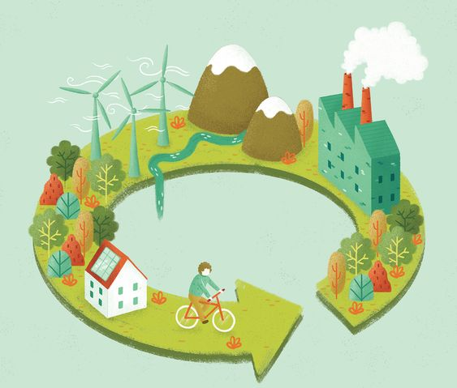

-

Cambio climático
La economía circular ofrece un marco de soluciones sistémicas para el desarrollo económico abordando profundamente la causa de retos mundiales tales como el cambio climático, la pérdida de biodiversidad, el incremento de residuos y de contaminación, al tiempo que revela grandes oportunidades de crecimiento
ver más -

Beneficios de la economía circular
Medidas como la prevención de residuos, el diseño ecológico y la reutilización podrían ahorrar dinero a las empresas de la UE mientras se reduce el total anual de emisiones de gases de efecto invernadero. Actualmente, la producción de los materiales que usamos diariamente son responsables del 45% de las emisiones de CO2.
Ver más -

¿qué es la economía circular?
La economía circular es un modelo de producción y consumo que implica compartir, alquilar, reutilizar, reparar, renovar y reciclar materiales y productos existentes todas las veces que sea posible para crear un valor añadido. De esta forma, el ciclo de vida de los productos se extiende.
Ver más
Importancia de la economía circular
Economía circular, cambio climático, crecimiento y empleo
Una nueva iniciativa de transformación social
La economía circular ofrece un marco de soluciones sistémicas para el desarrollo económico abordando profundamente la causa de retos mundiales tales como el cambio climático, la pérdida de biodiversidad, el incremento de residuos y de contaminación, al tiempo que revela grandes oportunidades de crecimiento. Impulsada por el diseño y sustentada por el uso de energías y materiales renovables, la economía circular revoluciona la forma en que diseñamos, producimos y consumimos. El modelo se basa en tres principios: eliminar residuos y contaminación; mantener productos y materiales en uso, y regenerar sistemas naturales.
Leer más